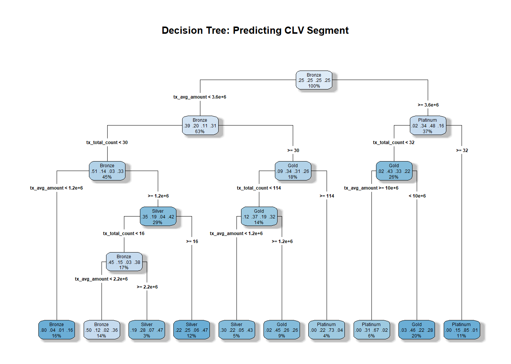
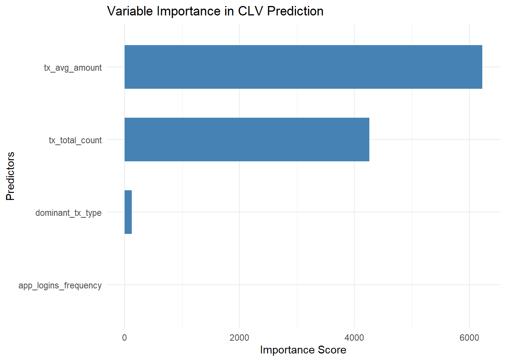

Code
library(tidyverse)
library(janitor)
library(rpart)
library(rpart.plot)
library(visNetwork) # Added for interactive decision treeSHUANG ZIXIN
This report outlines the visual analytics workflow to build, visualize, and interpret a Decision Tree model predicting Customer Lifetime Value (CLV) segments. The focus is on the data preparation process, the rationale behind the chosen visualization techniques, and the implementation of design and interactivity principles to aid business interpretation.
The data preparation phase is critical to ensure the machine learning model receives clean, aggregated, and balanced inputs.
Before diving into the data processing, several essential R packages are loaded to facilitate different stages of the analytical workflow:
tidyverse: A core collection of R packages (including dplyr, ggplot2, and readr) used for comprehensive data manipulation, transformation, and foundational data visualization.janitor: Utilized primarily for its robust data cleaning capabilities, specifically the clean_names() function, which automatically standardizes messy column headers into a consistent snake_case format.rpart: The primary machine learning engine used in this project to compute and construct the decision tree model (Recursive Partitioning and Regression Trees).rpart.plot: An extension to rpart designed to generate highly readable, static, and publication-ready visual representations of the decision tree.visNetwork: An R package for interactive network visualization using HTML widgets. It is employed here to render a dynamic, explorable version of the decision tree to enhance user interactivity.# Load data
customer_data <- read_csv("data/customer_data.csv")
transactions_data <- read_csv("data/transactions_data.csv")
# Clean column names for consistency
customer_data <- customer_data %>% janitor::clean_names()
transactions_data <- transactions_data %>% janitor::clean_names()
# Convert date if a date column exists
if ("date" %in% names(transactions_data)) {
transactions_data <- transactions_data %>%
dplyr::mutate(date = as.Date(date))
}The original dataset consists of two different granularities: customer-level demographics and transaction-level behaviors. To train the model, we must aggregate the transaction data into customer-level behavioral indicators (e.g., total count, average amount, dominant transaction type).
# Aggregate transaction-level data
tx_summary <- transactions_data %>%
dplyr::group_by(customer_id) %>%
dplyr::summarise(
tx_total_count = dplyr::n(),
tx_avg_amount = mean(amount, na.rm = TRUE),
tx_total_amount = sum(amount, na.rm = TRUE),
tx_type_diversity = dplyr::n_distinct(type),
dominant_tx_type = names(sort(table(type), decreasing = TRUE))[1],
.groups = "drop"
)
# Merge datasets
df <- customer_data %>%
dplyr::left_join(tx_summary, by = "customer_id")Several data cleaning and transformation steps were executed to prepare the modeling dataset: 1. Factor Conversion: Categorical variables (e.g., clv_segment, gender) were converted to factors for classification. 2. Dynamic Thresholding for Churn: Instead of an arbitrary 0.5 threshold, the churn_risk was dynamically defined using the mean of churn_probability. This prevents severe class imbalance where 100% of data falls into a single class. 3. Removing Noise and Leakage: Identifiers (customer_id), irrelevant text (location, occupation), and raw date columns were dropped to prevent overfitting and target leakage. Missing values were also omitted.
df_tree <- df %>%
mutate(
clv_segment = as.factor(clv_segment),
customer_segment = as.factor(customer_segment),
income_bracket = as.factor(income_bracket),
gender = as.factor(gender),
dominant_tx_type = as.factor(dominant_tx_type),
# Use dynamic mean to handle data distribution realistically
churn_risk = as.factor(ifelse(churn_probability > mean(churn_probability, na.rm = TRUE),
"High Risk", "Low Risk"))
) %>%
select(-customer_id, -location, -occupation, -first_tx, -last_tx,
-last_survey_date, -first_transaction_date, -last_transaction_date) %>%
drop_na(clv_segment, churn_risk)
# Export for potential future dashboard usage
write_rds(df_tree, "data/df_tree.rds")Decision trees are inherently “white-box” models. The primary goal of our visualization is to translate mathematical splits into actionable business rules.
rpart.plot)We utilized rpart.plot to generate a static, highly readable hierarchical tree.
Design Principles Implemented: * Color Encoding (box.palette = “Blues”): Sequential color intensity maps to node purity or class probability. Darker shades draw immediate attention to high-probability nodes (e.g., pure Platinum segments). * Information Hierarchy (extra = 104): Nodes are annotated with specific multi-class probabilities and the percentage of observations. This provides statistical context without cluttering the view. * Layout (type = 4): Branch labels are drawn cleanly to avoid overlapping text, maximizing readability.
tree_model <- rpart(
formula = clv_segment ~ age + income_bracket + app_logins_frequency + tx_total_count + tx_avg_amount + dominant_tx_type,
data = df_tree,
method = "class",
control = rpart.control(minsplit = 20, cp = 0.01)
)
rpart.plot(
tree_model,
type = 4,
extra = 104,
box.palette = "Blues",
main = "Decision Tree: Predicting CLV Segment",
shadow.col = "gray"
)
To complement the tree, we visualized the relative importance of the predictors using a horizontal bar chart. Design Choices: A horizontal layout (coord_flip()) ensures that long variable names remain fully legible compared to a vertical layout.
imp_df <- as.data.frame(tree_model$variable.importance) %>%
rownames_to_column(var = "Variable") %>%
rename(Importance = 2)
ggplot(imp_df, aes(x = reorder(Variable, Importance), y = Importance)) +
geom_bar(stat = "identity", fill = "steelblue", width = 0.6) +
coord_flip() +
labs(title = "Variable Importance in CLV Prediction",
x = "Predictors", y = "Importance Score") +
theme_minimal()
visNetwork)While the static plot is informative, complex trees can cause cognitive overload. To address this, we implemented an interactive network visualization using visNetwork.
Interactivity Principles Best Practices Implemented: * Zooming and Panning: Users can scroll to zoom into specific nodes, fulfilling Shneiderman’s mantra: “Overview first, zoom and filter, then details-on-demand”. * Hover Tooltips: Extra statistical details are hidden by default and revealed only on hover, preserving visual cleanliness. * Collapsible Branches: Users can interact with the network to trace specific business logic paths without being distracted by irrelevant branches.
Based on the visual outputs: 1. Target Leakage Validation: The feature importance chart reveals that tx_avg_amount and tx_total_count dominate the tree structure. This suggests that the company likely uses these exact metrics to define the CLV segments internally. 2. Behavioral Gap: app_logins_frequency holds almost no weight in predicting CLV segments. This highlights a strategic gap: highly active App users do not necessarily translate to high-value customers. The business should focus on monetizing high-frequency app behaviors.